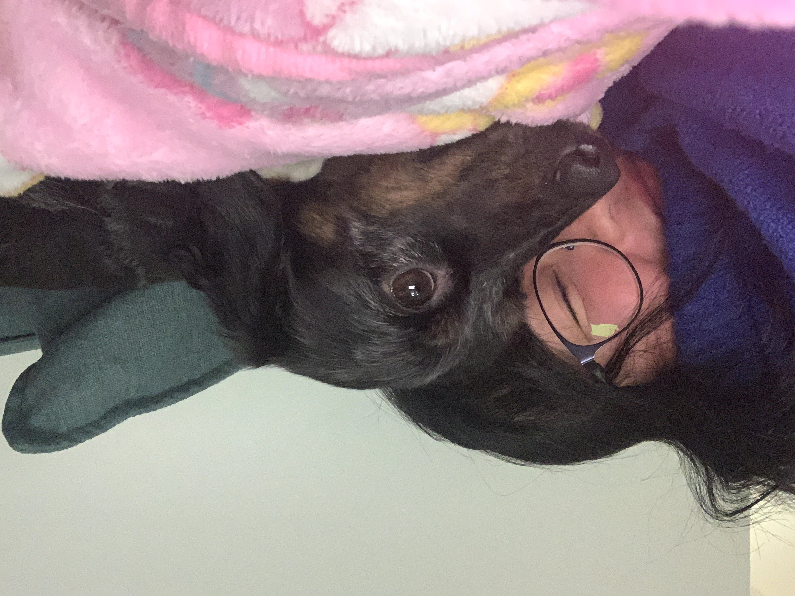

Olive Nguyen
Born on May 5th, 2018, she is a Dachshund, Japanese Chin, and Pekingese mix.
For five minutes, she was named Oliver.
Olive is the first and only dog of the Nguyen household.

July 2018, she was adopted by the Nguyen family in a buffet parking lot.
Her first owners were selling puppies on a craigslist ad.

Super territorial about her food, she is not afraid to flash her teeth when you're near!
In love with her 3pm and 8:30pm treats, she is on a strict eating routine.

Don't you dare say 'Happy Birthday!' because she will not hesitate to start singing.
She loves her plethora of plushies, holiday gifts, and homemade sweaters.
Her favorite thing about the winter is getting to jump around in the snow.

In love with running on the beach and jumping in the water, salt is her escape!
She has traveled with the family to Neah Bay and hopped into the boat,
life vest attached, to watch seals, whales and fish in the Pacific Ocean.


Although she is always grumpy with Sadie, she does love her.
When Sadie comes around, Olive will automatically stretch herself out for some pets!
Give Olive a follow on Instagram!